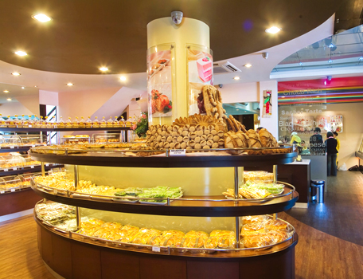

ABOUT THE CAKE MIX DOCTOR®
History
Established in 1995, The Cake Mix Doctor Bakery is an International Bakery serving a great selection of bakery goods and innovations made with the highest quality ingredients. It has established a reputable bakery system from one modest family business that produced a variety of wafer and cookies in Yogyakarta.
The Cake Mix Doctor Bakery gives a significant improvement in bread and cake production with time, experience and food technology improvement and is expanding into other mainstream market, a bakery and cake business, in Yogyakarta.
The Cake Mix Doctor Bakery's first outlet is located on Jl. Monumen Jogja Kembali, Sleman, Yogyakarta. It launched with an on-site production system which guarantee the quality of the fresh and the premium taste of the cake's deliciousness. Soon, a new outlet also opening on Jl. Kusumanegara, Yogyakarta, to serve with better and more complete variety taste of breads and cakes. In 2008, a new outlet is opening with a new lifestyle bakery concept, by attaching a new Coffee Shop in Jl. Affandy, - Yogyakarta. A place for conversation and a sense of community. A third place between work and home.
Each outlet of The Cake Mix Doctor Bakery serving a varying products of breads, croissants, traditional cakes, birthday cakes, occasion cakes, praline chocolates and cookies. Through these products and internet services, The Cake Mix Doctor Bakery continues to expand in bakery service in the domestic Indonesian industry
Our Vision
It always, and always on, about taste.
Our vision is to give the best quality of service and variety of bakery products with high taste and excellence to customers.
Our Mission
Is as The Easy One Stop Bakery.
The mission is appointed to priorities the easiness and comfort of customer services, online and onsite, with innovative and variety products with an essential in the high and appetizing of the taste. Valuable customers will gain easy shopping experience in acquiring product and services because of the flexibility of our skilled staff, carrying on a humble personality and the eagerness to serve the best.